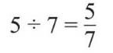
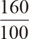
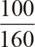
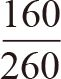
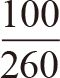
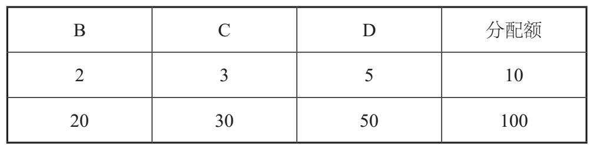

我总觉得除号“÷”是比号“∶”和分号“–”的组合，从形式上看的确如此。不知道瑞士数学家约翰·雅恩（Johan Rahn，1622—1676）在第一次使用这个符号时是不是也有这样的想法。但是这恰恰说明除法、分数和比率有着不可分割的关系。三者的关系可以由下式看得一清二楚：

可是，5∶7的含义还不完全和分数及除法相同。如果两种物质的数量之比是5∶7，其含义是：对于每5份物品，有7份另一种物品与之对应。
在我的蒸粗麦粉包制作说明中，建议每100克干蒸粗麦粉搭配160毫升水。160毫升水的质量是160克，这样我就可以写下这个比率为：
水∶蒸粗麦粉
160∶100
如果我按这个数量制作了一份美味的“地中海式饮食”，那么水和蒸粗麦粉的占比又是多少呢？这时我们就要区分比率和分数了。
水在成品中的占比不可能大于1，所以

这个结果是不合理的。同样，蒸粗麦粉在成品中的占比也不可能是
。我的碗中的餐点包含100克蒸粗麦粉和160克水，总计260克。从中可以计算出两种配料的占比是

（水）、
（蒸粗麦粉）。这里给出的是两种成分在总量中的占比，分母就是总质量。对于前面的分数来说，我们可以进一步把分数值化简，即同时除以20，这样160∶100就变成8∶5。如果我还要制作一定数量的食物并且保持8∶5的配比不变，那么250克蒸粗麦粉需要多少水呢？根据8∶5的配比，可得出400∶250=8∶5，所以水的质量应该是400克。
很多学校的课程中的一些分配货币的问题涉及了比率：如果安娜姑妈要将100英镑分给她的侄女比莉、克拉拉和黛西，分配比率为2∶3∶5，那么每一个人会分到多少英镑？
首先要注意的是，比率的问题可能会涉及两个以上的量，而分数问题则不行。解题的思路是：可以把安娜姑妈的钱想象成100英镑的硬币，我们要做的是把这些硬币分配出去。给比莉2英镑，给克拉拉3英镑，给黛西5英镑，第一次可以分出去10英镑。很明显，只要10次就可以把100英镑分完。所以经过10次分配后，安娜姑妈的侄女们分别得到了20英镑、30英镑和50英镑：

比率还可以应用在地图的比例尺中。在简单的地图中，往往有“1厘米代表实际100千米”的字样。然而，一些地图和地图集可能只出现“1∶50 000”的标志，表示的是地图上的尺寸与实际尺寸的比率。
例如，如果我的房子和彩票店之间的距离从图上量是5厘米，那么实际是多远呢？
由1∶50 000的比率可知，真实的距离是5厘米的50 000倍，即5厘米×50 000=250 000厘米。这个距离究竟有多远呢？将厘米换算成米后，距离应为2 500米或2.5千米，不算很远。
当我到了彩票店，会遇到更多有关比率的例子，如赔率。习惯上赔率以“比”或“–”来表示，有时也会用类似分数的符号“/”来表示。但无论是以怎样的方式表示，赔率表示的都是你有多少胜算。例如，赔率为5∶2（5–2或5/2）时，押2英镑，会赢5英镑。赌注收回，你会得到7英镑。若赔率为2∶5，押5英镑，如果赢了，也会得到7英镑。
值得注意的是，这里说的赔率不是概率，尽管从某种程度上说，二者均反映了一种可能性。想要了解更多信息，请参看第25章内容。